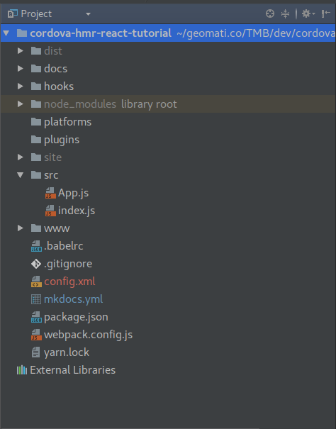
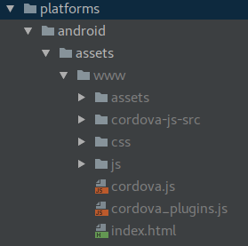
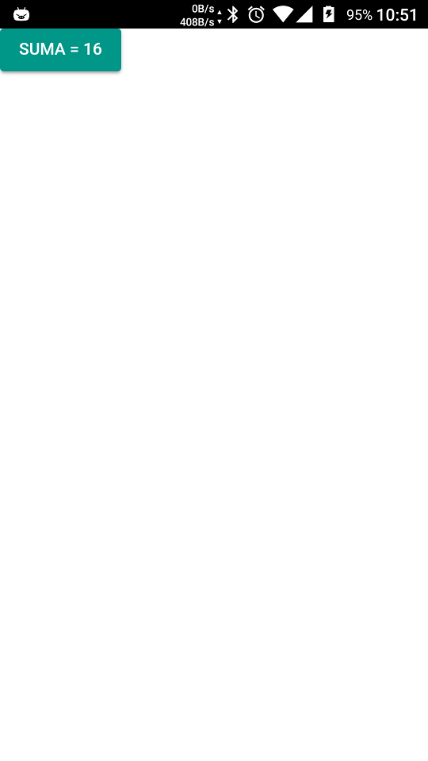
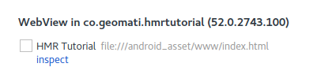
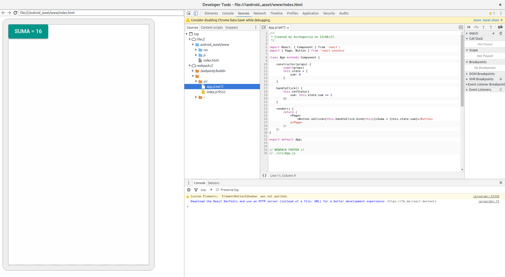

Añadiendo Cordova al stack
Seguiremos adelante añadiendo Cordova al stack de herramientas. Teniendo instalado cordova-cli
crearemos un proyecto:
cordova create hmrtutorial co.geomati.hmrtutorial HmrTutorial
Crearemos el proyecto fuera de nuestra carpeta de raiz, ya que de otra manera la cordova-cli dará un error. Después moveremos
la estructura del proyecto cordova creado a nuestro raíz, quedando de la siguiente manera:

Atendiendo un poco a como funciona cordova, deberemos modificar ligeramente la estructura de nuestro proyecto para adecuarnos
a esta tecnología. Un proyecto cordova dispone de una carpeta www donde se encuentra lo que será la aplicación que acabe
mostrandose en la webView. cordova durante el proceso de build copia el contenido de la carpeta www a la carpeta
<platform>/assets/www de la plataforma que estemos construyendo. Teniendo esto en cuenta, deberemos apuntar la salida de nuestro
webpack a la carpeta www eliminando la carpeta dist.
Eliminaremos todo el contenido de la carpeta www generado por cordova, y moveremos el dist/index.html a la carpeta
www. Ahora modificaremos el webpack.config.js para que la salida apunte a esta carpeta www:
output: {
path: path.resolve(__dirname, 'www/js'),
filename: '[name].js',
publicPath: "/js/"
},
...
devServer: {
contentBase: path.join(__dirname, "www"),
hot: true, // Tell the dev-server we're using HMR,
compress: true,
port: 3000,
publicPath: "/js/"
},
Para probar de nuevo nuestra App pero esta vez en entorno móvil, primero deberemos añadir una platform
Añadiremos la plataforma de Android:
$ cordova platform add android
Tras esto, veremos que se ha añadido contenido a la carpeta platforms. Si navegamos por el directorio platforms/android/assets/www
veremos que se ha replicado el contenido de nuestra carpeta www y además aparecen varios archivos y directorios que necesita
cordova.

Si arrancamos la aplicación en un terminal:
$ cordova run android
Tendremos nuestra App en el terminal:

Si queremos debugar nuestra App corriendo en el terminal, utilizaremos las herramientas de desarrollo de Chrome. Navegamos a
la url chrome://inspect y veremos que aparece nuestra WebView:

si pulsamos sobre inspect podremos ver la consola de desarrollo para nuestra App cargada en el terminal

¿Qué pasa si ahora modificamos el texto de nuestro botón?. Veremos que no sucede nada en el terminal, ya que lo que estamos
viendo es una versión "construida" de lo que existe en nuestra carpeta www, ya que en el build de cordova se copia
el contenido a la carpeta de la plataforma y se empaqueta en el archivo que será instalado en el terminal.
Desde el inspect podremos debugar sobre el código fuente de nuestra App, pero cada cambio deberá ser primero compilado
por webpack:
$ npm run build
y luego construido e instalado en el terminal:
$ cordova run android
algo que puede ser sumamente tedioso en función del tamaño de nuestra app.
Pero, ¿no podemos desarrollar en web, donde tenemos las herramientas de desarrollo habituales y luego empaquetar para usar en el
terminal?, si, en muchas casos esa es la estrategia a utilizar, pero cuando empezamos a hacer uso de plugins de cordova
nos surge el problema de que necesitaremos emuladores de esos plugins en entorno web, y en muchos casos estos no existen o
estás desactualizados.
Hasta ahora lo más funcional es Cordova-Simulate que simula un entorno
cordova en la web.